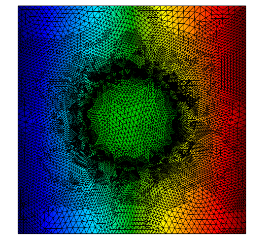
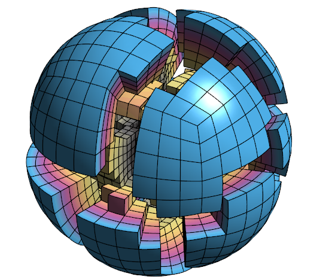
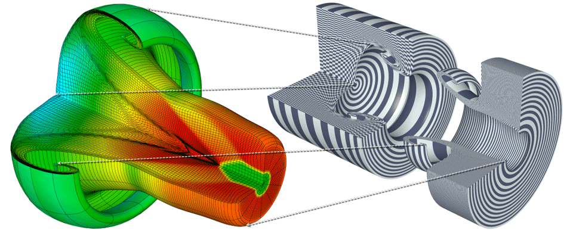
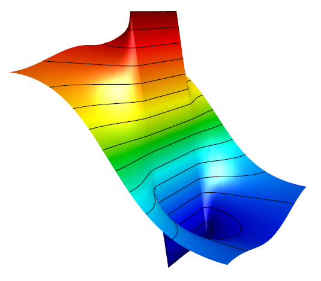
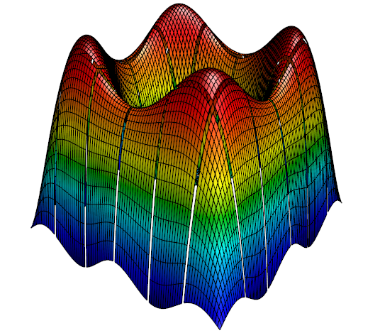
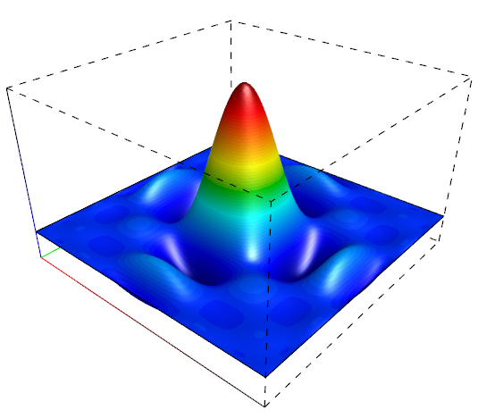

Gallery
This page collects screenshots from various simulations that have used GLVis visualization. Additional images can be found in the MFEM Gallery.
{kind=link}
The GLVis logo is derived from the Metatron model at bathsheba.com. Shown is the magnitude of the projection of a smooth vector field using 4th order Nedelec elements on a second order curved tetrahedral mesh (based on MFEM's Example 3).

Locally refined grid in 2D. Simulation with MFEM.

Unstructured parallel decomposition of a fourth order NURBS mesh of the unit ball obtained in the solution of MFEM's parallel Example 1 on 16 processors.
{kind=link}
Curvilinear 8th order mesh from a triple-point shock simulation in the MFEM-based BLAST shock hydrodynamics code. Click for a movie of the evolution of the processor partitioning from a high-resolution parallel run of the problem produced with a GLVis script.

Axisymmetric problem with revolved 2D mesh and solution, plus coloring grid functions emphasizing mesh elements.

Level lines in 2D. Simulation with MFEM.
3D Arbitrary Lagrangian-Eulerian (ALE) simulation of a shock-triple point interaction with Q2-Q1 elements in the MFEM-based BLAST shock hydrodynamics code. Shown are the cutting plane and level surface capabilities of GLVis.

The SIAM CSE13 logo illustrates the decomposition of a hexahedral zone in tetrahedral "sides". This and related images can be found in this paper.

Stitched parallel results from hypre's Example 4 on 36 processors.

One of the eight order (Q8) basis functions on the reference square. The sub-refinement in GLVis (key 'i') allows for the correct visualization of such high-order functions.